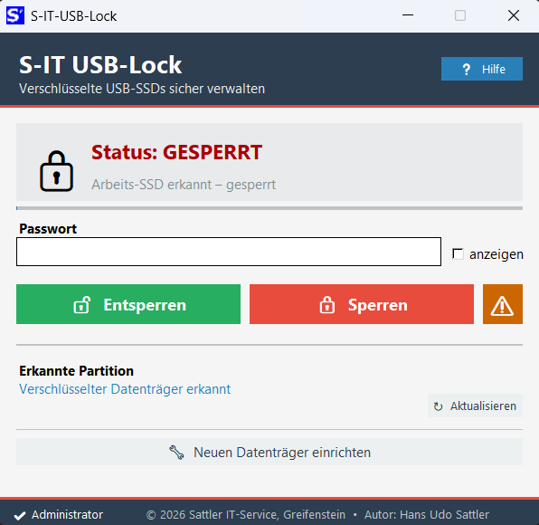
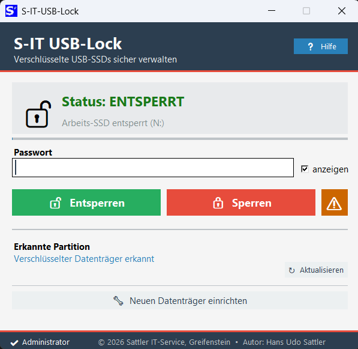
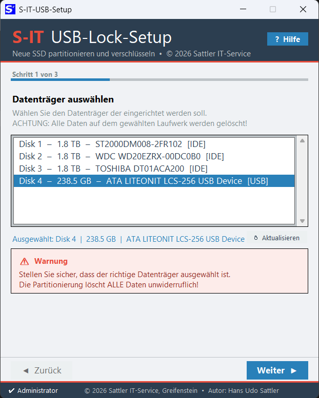
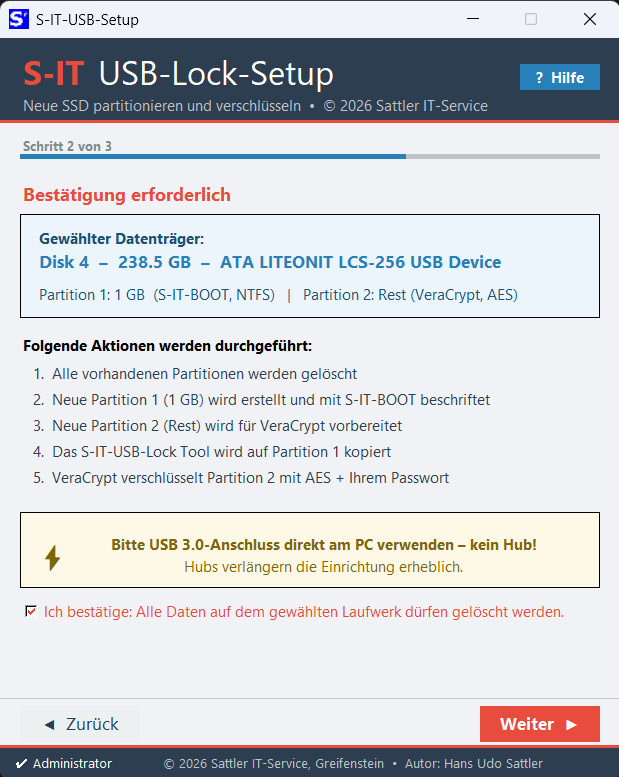
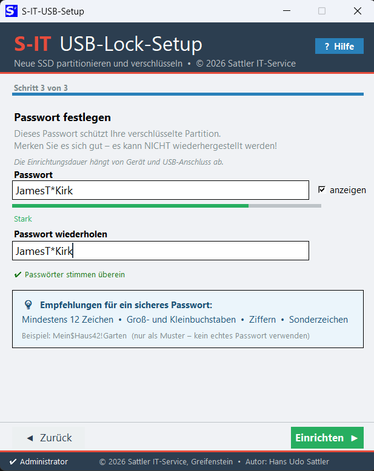
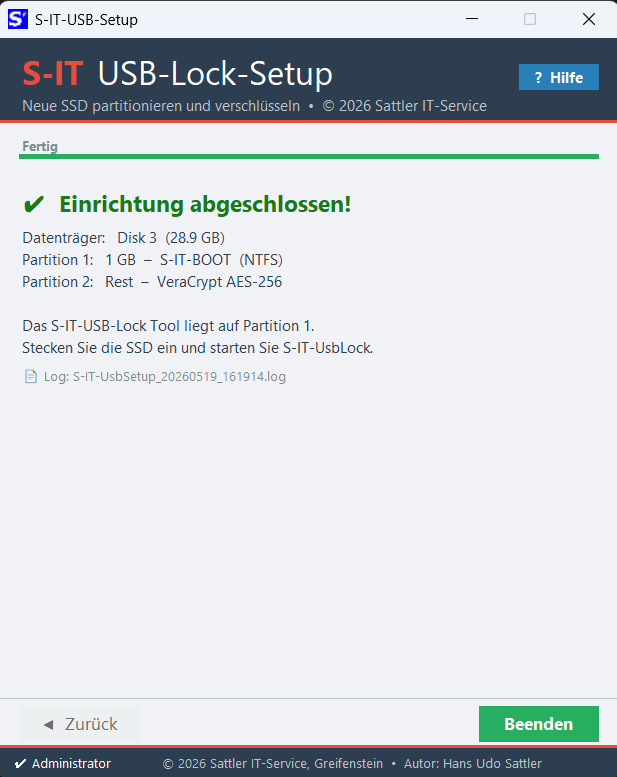

Zwei Komponenten – ein Zweck
S‑IT USB-Lock ist ein Tool-Paar für die sichere Nutzung externer Datenträger unter Windows. Egal ob USB-Stick, externe SSD oder HDD – einmal eingerichtet lässt sich der Datenträger auf jedem Windows-PC ohne Installation entsperren und sperren.
Funktionen
AES-256-Verschlüsselung
Militärstarke Verschlüsselung auf Basis von VeraCrypt – bewährt, open-source und auditiert.
Portabel
UsbLock startet direkt vom Datenträger – keine Installation auf dem Gast-PC notwendig.
Schnelle Einrichtung
Dank Schnell-Verschlüsselung dauert die Einrichtung auch großer Datenträger nur wenige Minuten.
Automatische Erkennung
UsbLock erkennt den angeschlossenen S-IT-Datenträger automatisch – kein manuelles Auswählen.
Neueinrichtung per Knopfdruck
Neuen Datenträger direkt aus UsbLock heraus einrichten – UsbSetup startet automatisch vom bestehenden Gerät.
Vollständiges Log
UsbSetup protokolliert jeden Einrichtungsschritt in einer Log-Datei – ideal für Fehlersuche und Dokumentation.
Ablauf: Ersteinrichtung
S-IT-UsbSetup.exe als Administrator ausführen – aus dem heruntergeladenen Paket oder direkt vom bereits eingerichteten S-IT-Datenträger.
Den neuen Datenträger (SSD, HDD oder USB-Stick) anschließen und in der Liste auswählen. Interne Systemlaufwerke werden automatisch ausgeblendet.
Datenverlust-Warnung lesen, Checkbox aktivieren und mit „Weiter" bestätigen.
Ein sicheres Passwort eingeben und bestätigen. Das Passwort wird nirgends gespeichert – Verlust bedeutet Datenverlust.
UsbSetup richtet Partitionierung, Verschlüsselung und alle Tool-Dateien vollautomatisch ein. Danach ist der Datenträger sofort mit UsbLock nutzbar.
Screenshots
S‑IT UsbLock


S‑IT UsbSetup




Download & Inhalt
Das ZIP-Paket enthält beide Tools sowie alle notwendigen Komponenten – einfach entpacken und starten, keine Installation erforderlich.
Downloads und Releases: GitHub Releases
Systemanforderungen
| Komponente | Anforderung |
|---|---|
| Betriebssystem | Windows 10 / Windows 11 (64-Bit) |
| Rechte | Administratorrechte erforderlich |
| Anschluss | USB 3.0 oder USB-C empfohlen |
| Datenträger | Externe SSD, HDD oder USB-Stick (mind. 2 GB) |
| Enthaltene Komponenten | VeraCrypt (portabel) – keine Zusatzinstallation nötig |
| Einschränkung | Pro Sitzung wird genau ein S-IT-Datenträger verwaltet |
Sicherheits- und Installationshinweis
Hinweis zu Virenscannern & SmartScreen
Da es sich um unabhängig entwickelte Windows-Tools handelt, kann es vorkommen, dass Windows SmartScreen oder installierte Internet-Security-Programme die Datei zunächst als unbekannt einstufen.
In diesem Fall fügen Sie das Programm bitte als vertrauenswürdig bzw. als Ausnahme in Ihrer Sicherheitssoftware hinzu.
Lizenz VeraCrypt
S‑IT USB-Lock enthält VeraCrypt in portabler Form. VeraCrypt steht unter einer kombinierten Open-Source-Lizenz (Apache 2.0 / TrueCrypt 3.0). Die vollständigen Lizenztexte sind im VeraCrypt-Unterordner des Pakets enthalten.
Changelog
🔐 Version 1.9.8 / 3.1.0 – Erstveröffentlichung
Erstes stabiles Release des Tool-Paares. UsbLock mit automatischer Datenträgererkennung, Entsperren/Sperren, erzwungenem Sperren und Setup-Start-Button. UsbSetup mit 3-Schritt-Assistent, Schnell-Verschlüsselung und vollständigem Log.
Kontakt
Hat Ihnen dieses Tool geholfen?
S‑IT USB-Lock wird kostenlos entwickelt und gepflegt.
Eine kleine Spende hilft dabei, die Tools weiterzuentwickeln. Herzlichen Dank! 🙏
tool-entwicklung@sattler-it.de